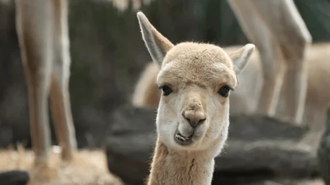

Lama (Lama glama), Güney Amerika’nın And Dağları’na özgü, evcilleştirilmiş bir devegiller türüdür; özellikle Peru, Bolivya, Şili ve Arjantin’de yaygın olarak yetiştirilir. Ortalama 20–25 yıl yaşayabilen lamalar, otçul beslenerek otlar, yapraklar ve çalılarla yaşamlarını sürdürür; dayanıklı yapıları sayesinde yüksek rakımlı bölgelerde ağır yükler taşıyabilirler. Sosyal hayvanlar olan lamalar sürüler halinde yaşar, insanlar tarafından binlerce yıldır yük taşıma, yün üretimi ve et kaynağı olarak kullanılmıştır. Yumuşak ve kaliteli yünleri tekstil ürünlerinde tercih edilirken, sakin ve uysal karakterleri nedeniyle günümüzde terapi hayvanı olarak da değerlendirilmektedir. Lamalar, kültürel açıdan And toplumlarının sembollerinden biri olmuş, hem ekonomik hem de sosyal yaşamda önemli bir yer edinmiştir.